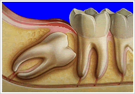

Bonding is the application of a tooth-colored composite resin (plastic) to repair a decayed, chipped, fractured or discolored tooth. Unlike veneers, which are manufactured in a laboratory and require a customized mold to achieve a proper fit, bonding can be done in a single visit. The procedure is called bonding because the material bonds to the tooth.
Bonding is among the easiest and least expensive of cosmetic dental procedures. The composite resin used in bonding can be shaped and polished to match the surrounding teeth. Most often, bonding is used for cosmetic purposes to improve the appearance of a discolored or chipped tooth. It also can be used to close spaces between teeth, to make teeth look longer or to change the shape or color of teeth. Sometimes, bonding also is used as a cosmetic alternative to amalgam fillings, or to protect a portion of the tooth’s root that has been exposed when gums recede.
No preparation is needed for bonding. Anesthesia often is not necessary, unless the bonding is being used to fill a decayed tooth.
Dr. Alvarez will use a shade guide to select the composite resin color that will match the color of the tooth most closely. Once Dr. Alvarez has chosen the color, he will slightly abrade or etch the surface of the tooth to roughen it. The tooth will be coated lightly with a conditioning liquid, which helps the bonding material adhere. When the tooth is prepared, . Alvarez will apply the tooth-colored, putty-like resin. The resin is molded and smoothed until it’s the proper shape. Then the material is hardened with an ultraviolet light or laser.
After the bonding material hardens, . Alvarez will further trim and shape it. Then he will polish the material until it matches the sheen of the rest of the tooth surface. It usually takes about 30 minutes to an hour to complete the procedure. If you’re having more than one tooth done, you may need to schedule several visits.
Tea, coffee, cigarette smoke and other substances can stain the resin. To prevent or minimize stains, it’s essential to avoid eating or drinking foods that can stain for the first 48 hours after any composite procedure. In addition, brush your teeth often and have them cleaned regularly by a dental hygienist.
This common procedure involves the removal of gum tissue, bone or both to expose more of a tooth’s structure.
Crown lengthening is done when a tooth needs to be restored, but there is not enough tooth structure above the gum line to support a filling or a crown.
This can happen when a tooth breaks off at the gum line, or a crown or filling falls out of a tooth that has extensive decay underneath.
In rare cases, a condition called gummy smile — when an unusually large amount of gum tissue shows around the upper teeth — can be treated using crown lengthening.
This procedure is done under local anesthesia. The amount of time it takes varies depending on the number of teeth that requiretreatmente. Although your problem may involve only one tooth, crown-lengthening surgery typically includes neighboring teeth so that the tissues can be reshaped gradually. If only soft tissue is removed, the procedure probably will take less time than if both soft tissue and bone are removed.
Dr. Alvarez will make incisions to “flap” the gums away from the teeth. This provides access to the roots of the teeth and the surrounding bone. The bone is removed using a combination of hand instruments (resembling chisels) and rotary instruments (similar to the drill and burs used to treat cavities).
Once Dr. Alvarez is satisfied that enough tooth structure is exposed, the surgical area will be washed with sterile salt water and the flaps will be stitched together. At this point, your teeth will look longer because the gums are now sitting at a lower level then before the surgery.
After the soft tissue and bone have been removed, the incisions are sutured. This will cause more of the tooth or teeth to be exposed.
You will be given prescriptions for pain medication and a chlorhexidine mouth rinse. Dr. Alvarez will review oral-hygiene instructions, and ask you to follow a somewhat soft diet. You can brush the teeth in the area that was worked on, but you should avoid the gums. You can remove food particles around the affected teeth with a toothpick or a water irrigator.
Almost anyone whose permanent teeth have come in can qualify for tooth whitening. Dr. Alvarez will be able to assess your oral health and recommend the whitening method that’s best for you. Depending on the type and severity of the staining, Dr. Alvarez may suggest one or more of the following treatments:
Get a consultation with Dr. Alvarez today to determine which technique is best for you. Factors that will be considered:
A veneer is a thin layer of porcelain made to fit over the front surface of a tooth, very much as a false fingernail fits over a nail. Sometimes a natural color ‘composite’ material is used instead of porcelain.
Veneers make teeth look natural and healthy. Because they are very thin and are held in place by a special strong bond (rather like super-glue), very little preparation of the tooth is necessary.
Veneers can improve the color, shape and position of teeth. A precise shade of porcelain can be chosen to give the required color, to improve a single discolored or stained tooth, or to lighten front teeth (usually the upper ones) generally. A veneer can make a chipped tooth look intact again — the porcelain covers the whole of the front of the tooth with a thicker section replacing the broken part. Veneers can also be used to close small gaps when orthodontics is not suitable. If one tooth is slightly out of position, a veneer can sometimes be fitted to bring it into line with the others.
Veneers should last for many years, but they can chip or break, just as your own teeth can. Dr. Alvarez will advise you how long each individual veneer should last. Small chips can be repaired, or a new veneer fitted if necessary.
A veneer takes at least two visits: the first to prepare the tooth and to match the shade, and the second to fit it. Before bonding it in place, Dr. Alvarez will show you the veneer on your tooth to make sure you are happy with it. Bonding a veneer in place is done with a special adhesive, which holds it firmly on the tooth.
Only minor adjustments can be made to the veneer after it is fitted. It is usually best to wait a little while to get used to it before any changes are made. Dr. Alvarez will probably want to check and polish it a week or so after it is fitted and to make sure that you are happy with it.
Dental implants are metal posts or frames that are surgically positioned into the jawbone beneath your gums. Once in place, they allow replacement teeth to be mounted onto them.
Because implants fuse to your jawbone, they provide stable support for artificial teeth. Dentures and bridgesmounted to implants won’t slip or shift in your mouth — an especially important benefit when eating and speaking. This secure fit helps the dentures and bridges — as well as individual crowns placed over implants — feel more natural than conventional bridges or dentures.
For some people, ordinary bridges and dentures are simply not comfortable or even possible, due to sore spots, poor ridges or gagging. In addition, ordinary bridges must be attached to teeth on either side of the space left by the missing tooth. An advantage of implants is that no adjacent teeth need to be prepared or ground down to hold your new replacement tooth/teeth in place.
To receive implants, you need to have healthy gums and adequate bone to support the implant. You must also commit to keeping these structures healthy. Meticulous oral hygiene and regular dental visits are critical to the long-term success of dental implants. Implants are usually more expensive than other methods of tooth replacement, and most insurance carriers typically cover less than 10 percent of the fees.
The American Dental Association considers two types of implants to be safe. They are:
Implants generally last 10-20 years, depending on the location of the implant and patient compliance with oral hygiene and dental visits. Because molars receive more stress and wear and tear, these implants typically do not last as long as implants located at the front of your mouth.
Dentures are replacements for missing teeth that can be taken out and put back into your mouth. While dentures take some getting used to, and will never feel exactly the same as one’s natural teeth, today’s dentures are natural looking and more comfortable than ever.
There are two main types of dentures: full and partial. Dr. Alvarez will help you choose the type of denture that’s best for you based on whether some or all of your teeth are going to be replaced and the cost involved.
With full dentures, a flesh-colored acrylic base fits over your gums. The base of the upper denture covers the palate (the roof of your mouth), while that of the lower denture is shaped like a horseshoe to accommodate your tongue.
Dentures are custom-made in a dental laboratory from impressions taken of your mouth. Dr. Alvarez will determine which of the three types of dentures described below is best for you.
A conventional full denture is placed in your mouth after any remaining teeth are removed and tissues have healed. Healing may take several months, during which time you are without teeth.
An immediate full denture is inserted immediately after the remaining teeth are removed. Typically, Dr. Alvarez would take measurements and makes models of your jaw during a prior visit. While immediate dentures offer the benefit of never having to be without your teeth, they must be relined several months after being inserted. The reason is that the bone supporting the teeth reshapes as it heals, causing the denture to become loose.
A partial denture rests on a metal framework that attaches to your natural teeth. Sometimes crowns are placed on some of your natural teeth and serve as anchors for the denture. Partial dentures offer a removable alternative to bridges.
Root canal treatment is needed for two main reasons: infection or irreversible damage to the pulp. An untreated cavity is a common cause of pulp infection. The decay erodes the enamel and dentin of the tooth until it opens into the root canal system, allowing bacteria to infect the pulp. Infections inside teeth don’t respond to antibiotic treatment. The inflammation caused by the infection restricts the tooth’s blood supply, so antibiotics in the bloodstream can’t reach the infection very well. The reduced blood supply also limits the pulp’s ability to heal itself.
If you have an infection of the pulp, you may not feel any pain at first. But if left untreated, the infection will cause pain and swelling. In some cases, an abscess will form. Eventually, the tooth may need to be extracted. Some indications that a tooth may need a root canal are:
Tooth extraction is the removal of a tooth from its socket in the bone.
If a tooth has been damaged by decay or a fracture, Dr. Alvarez will first try to repair the affected tooth and restore it with a filling, crown or other treatment. Sometimes, though, the damage is too extensive for the tooth to be repaired. This is the most common reason for extracting a tooth.
Dental hygiene services are centered on the promotion of wellness. In addition to examining patients for the signs and symptoms of serious diseases, our dental hygienists provide direct patient services and education for preventive measures at home. Their services include procedures to prevent periodontal infection and tooth decay.
The focus of dental hygiene services is the oral prophylaxis, sometimes referred to as teeth cleaning. This involves scaling the removal of hard calculus deposits above (supragingival) and below (subgingival) the gum line. These deposits aid the development of the bacterial colonies that cause periodontal (gum) disease, and can cause loose teeth and root decay.
It is important to note that supragingival scaling and coronal polishing do not constitute an oral prophylaxis. Since periodontal disease begins below the gum line, scaling must also be done below the gum line. It is negligent for a dental hygienist or dentist to provide a simple polishing and represent it as a thorough oral prophylaxis. Indeed, when performed by untrained personnel, polishing procedures can cause harmful changes in the teeth; remove the outer layer of enamel containing protective fluoride; and damage the tooth structure underneath.
Other dental hygiene services include application of pit and fissure sealants and the application of topical fluorides, both of which protect the surfaces of teeth from decay.
Dental inlays and onlays can be made from porcelain, gold, composite or ceramic resin, although porcelain is now becoming our material of choice because of its strength and potential to match the natural color of your tooth. Here at Alvarez Dentistry we are always looking to bring our patients the very best alternatives in dental technology.
A dental inlay or dental onlay is similar to a filling and lies inside the cusp tips of the tooth. They are both custom-made to fit the prepared cavity and are then cemented into place. A Dental Onlay is a more extensive reconstruction that covers one or more cusps of a tooth. Onlays are indicated in situations where a substantial reconstruction is required. However, more of the tooth structure can be conserved compared to the placement of a crown.
At Alvarez Dentistry, the dental Inlays and Onlays can be designed and placed in one appointment. A patient in the past would have needed two appointments for inlays and onlays. With Dr. Alvarez’s use of CEREC technology (CAD-CAM), everything can be done in one appointment.
The advantages of using a Dental inlay or only are manifold. For example:
This common procedure involves the removal of gum tissue, bone or both to expose more of a tooth’s structure.
Crown lengthening is done when a tooth needs to be restored, but there is not enough tooth structure above the gum line to support a filling or a crown. This can happen when a tooth breaks off at the gum line, or a crown or filling falls out of a tooth that has extensive decay underneath. In rare cases, a condition called gummy smile — when an unusually large amount of gum tissue shows around the upper teeth — can be treated using crown lengthening.
This procedure is done under local anesthesia. The amount of time it takes varies depending on the number of teeth that requiretreatmente. Although your problem may involve only one tooth, crown-lengthening surgery typically includes neighboring teeth so that the tissues can be reshaped gradually. If only soft tissue is removed, the procedure probably will take less time than if both soft tissue and bone are removed.
Dr. Alvarez will make incisions to “flap” the gums away from the teeth. This provides access to the roots of the teeth and the surrounding bone. The bone is removed using a combination of hand instruments (resembling chisels) and rotary instruments (similar to the drill and burs used to treat cavities). Once Dr. Alvarez is fully satisfied that enough tooth structure is exposed, the surgical area will be washed with sterile salt water and the flaps will be stitched together. At this point, your teeth will look longer because the gums are now sitting at a lower level then before the surgery.
After the soft tissue and bone have been removed, the incisions are sutured. This will cause more of the tooth or teeth to be exposed. You will be given prescriptions for pain medication and a chlorhexidine mouth rinse. Dr. Alvarez will review oral-hygiene instructions with you and instruct you to follow a somewhat soft diet. You can brush the teeth in the area that was worked on, but you should avoid the gums. You can remove food particles around the affected teeth with a toothpick or a water irrigator.
Most oral surgeries include a common set of post-op instructions. These instructions include:
*Salt Water Rinse: mix 1 teaspoon of salt with 1 cup of lukewarm water – gargle, rinse, and spit – repeat until contents of cup are gone.